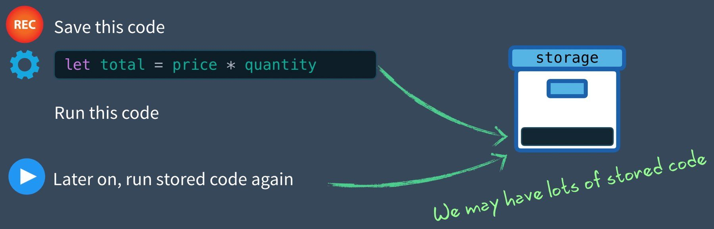
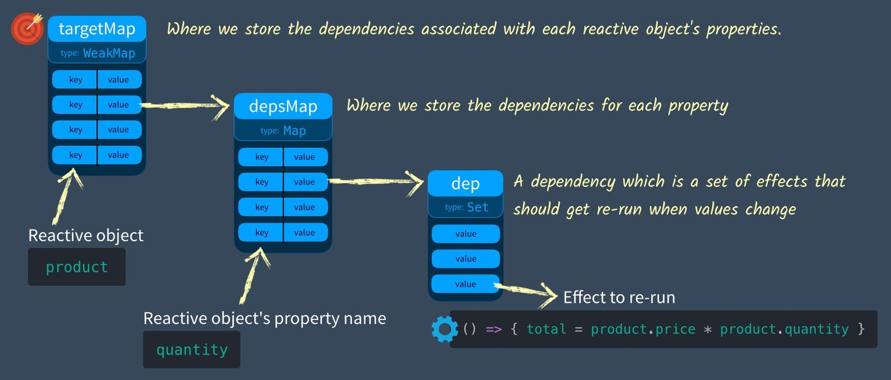

什么是数据响应式
<div id="app">
<div>Price: ${{ product.price }}</div>
<div>Total: ${{ product.price * product.quantity }}</div>
<div>Taxes: ${{ totalPriceWithTax }}</div>
</div>
<script src="https://cdn.jsdelivr.net/npm/vue"></script>
<script>
var vm = new Vue({
el: '#app',
data: {
product: {
price: 5,
quantity: 2
}
},
computed: {
totalPriceWithTax() {
return this.product.price * this.product.quantity * 1.03
}
}
})
</script>
当我们修改product.price = 10的时候，vue至少会做三件事情：
- 在页面上更新
price。 - 重新计算
price * quantity并更新页面。 - 再次调用
totalPriceWithTax函数并更新页面。

那么vue是如何知道我们更新了price，并做出这些响应的？
当然，在vue的世界里，这一切都显得理所当然。但是当我们把这种思维带回到JS的编程方式中，就会发现并不是这样。
现在先把vue放到一边，提取出一些关键的代码：
let product = { price: 5, quantity: 2 }
let total = product.price * product.quantity // 10
product.price = 20
console.log(`total is ${total}`)
// total is 10
在vue里我们期望最后打印结果为total is 40。
但是在JS里我们得到的结果却是total is 10，这是因为JS并不具备响应性。
dep - 保存代码并能够再次运行
要实现预期的效果，那当我们修改了product.price的之后，要是能再次运行total = product.price * product.quantity不就可以了？
所以我们需要一个能保存我们想要再次运行的代码的地方，并且当product.price更新后（后面再讲如何监控数据更新），能重新找到这些代码并运行它。

我们可以把代码记录成一个函数来达到这种目的，一般把这种函数叫做effect。
let product = { price: 5, quantity: 2 }
let total = 0
let effect = () => { total = product.price * product.quantity }
然后可以用一个Set来存储它，并用一个名为track的函数来做这件事情：
let dep = new Set()
function track() {
dep.add(effect) // Store the current effect
}

最后还需要一个触发函数trigger能够运行保存的所有effect：
function trigger() {
dep.forEach(effect => effect())
}
完整的代码：
let product = { price: 5, quantity: 2 }
let total = 0
let effect = () => {
total = product.price * product.quantity
}
let dep = new Set()
function track() {
dep.add(effect)
}
function trigger() {
dep.forEach(effect => effect())
}
track()
effect()
console.log(total) // 10
product.price = 20
trigger()
console.log(total) // 40
effect、track、trigger这三个单词将会伴随着整个vue3的响应式实现。
depsMap - 多个属性各自的 dep
上面的代码中，track和trigger实际上和数据并没有什么直接的关联。即：无论你改变product.price还是product.quantity，甚至你什么都不用改变，都能随时调用trigger。
但是实际上我们更想要的效果是：
- 你要告诉我对哪个数据进行监控。
- 我会找出哪些代码依赖了这个数据，并把这些代码保存起来。
- 你改变了哪个数据的时候要告诉我。
- 我根据你改变的数据去找到对应的代码并执行。
所以对于不同的数据，它们应该都有各自的dep。这样每次调用track和trigger的时候，都要接收一个key：
track根据key判断是否存在对应的dep，如果没有就新建一个，然后把effect保存到dep里。trigger根据key找对应的dep，如果存在就执行对应dep的所有effect。
我们可以用一个Map来记录这些关系：

完整的代码：
let product = { price: 5, quantity: 2 }
let total = 0
let effect = () => {
total = product.price * product.quantity
}
const depsMap = new Map()
function track(key) {
let dep = depsMap.get(key)
if (!dep) {
depsMap.set(key, (dep = new Set()))
}
dep.add(effect)
}
function trigger(key) {
let dep = depsMap.get(key)
if (dep) {
dep.forEach(effect => {
effect()
})
}
}
track('quantity')
effect()
console.log(total) // 10
product.quantity = 3
trigger('quantity')
console.log(total) // 15
targetMap - 多个对象各自的 depsMap
上面已经解决了一个对象中存在多个属性的问题，同样的，也可能会有多个这样的对象。
即对于不同的对象，它们都会有各自的depsMap。这样每次调用track和trigger的时候，都要接收一个目标对象target和一个key：
track先根据target判断是否存在对应的depsMap，如果没有就新建一个；再根据key判断在depsMap中是否存在对应的dep，如果没有就新建一个；最后把effect保存到dep里。trigger先根据target找对应的depsMap；再根据key在depsMap中找对应的dep，如果存在就执行对应dep的所有effect。
我们可以用一个WeakMap来记录这些关系，WeakMap可以看成是一种特殊的Map，其键必须是对象，而值可以是任意的：

完整的代码：
let product = { price: 5, quantity: 2 }
let total = 0
let effect = () => {
total = product.price * product.quantity
}
const targetMap = new WeakMap()
function track(target, key) {
let depsMap = targetMap.get(target)
if (!depsMap) {
targetMap.set(target, (depsMap = new Map()))
}
let dep = depsMap.get(key)
if (!dep) {
depsMap.set(key, (dep = new Set()))
}
dep.add(effect)
}
function trigger(target, key) {
const depsMap = targetMap.get(target)
if (!depsMap) {
return
}
let dep = depsMap.get(key)
if (dep) {
dep.forEach(effect => {
effect()
})
}
}
track(product, 'quantity')
effect()
console.log(total) // 10
product.quantity = 3
trigger(product, 'quantity')
console.log(total) // 15
总结
我们基本上已经实现了一开始期望的需求：
一个能保存我们想要再次运行的代码的地方，并且当
product.price更新后，能重新找到这些代码并运行它。
但是还有最后一个问题，现在都是手动去调用track和trigger，而理想情况是，我只需要修改数据，其它的工作都能自动完成。
所以还需要有一个办法能够自动监控/代理数据，并自动做出响应：Vue3 响应性原理之 Proxy & Reflect。
以上例子和思路均来源于官方教程 Vue Mastery。